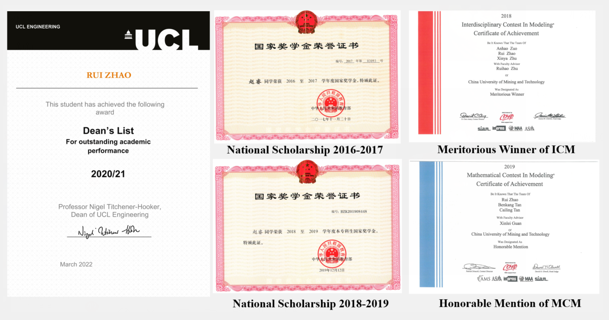

Rui Zhao
Welcome to my homepage! Currently, I am a simulation engineer at National Supercomputing Center in Wuxi, where I work on CFD, fatigue simulation, and parallel processing. Before that, I did my MSc at the department of mechanical engineering, University College London, where I was advised by Prof. Kai H. Luo, FREng and made the Dean's List. I did my bachelor's at the school of low-carbon energy and power engineering, China University of Mining and Technology.
Email / CV / Transcript
Research Interest
Education Background
MSc in Power Systems Engineering
University College London
BEng in Energy and Power Engineering
China University of Mining and Technology
Selected Awards
Scholarship
Recent Projects
I joined Prof. Cong Qi's lab from my sophomore year in 2017 and gained a lot of experience by conducting several experiments and numerical simulations. Under his supervision, I completed my thesis and was graded an A level. During my postgraduate studies, I completed my individual project and group project under the supervision of Prof. Kai H. Luo FREng.
This project aimed to simulate the operation of the Stirling engine and construct a supercomputer waste heat-driven microgrid. We initially applied a CFD model and the Runge-Kutta method to obtain numerical solutions. Then we established two Stirling engine forecasting models through the Gradient Boosted Regression Trees (GBRT) and the Improved Atom Search Optimisation Algorithm (IASO) retooled by elite opposition-based learning and dimensional Gaussian mutation, resulting in the prediction accuracy of 96.23% and 95% respectively. Finally, we designed a regional microgrid for waste heat recovery based on multi-objective optimization to achieve energy complementarity.
This project aimed to investigate turbulent combustion in a gas turbine configuration for aircraft propulsion by employing Large Eddy Simulation (LES). I initially studied the reactive and non-reactive flow in a realistic combustor in detail and observed the complex flow phenomena, including recirculation zones and coherent structures. Then I conducted parametric simulations to investigate the influence of equivalence ratio, combustor length, and dilution hole location on the performance parameters of the combustor. Finally, recommendations for reducing NOx emissions and improving combustor performance were made.
This project aimed to analyze the performance of a cooling system with a superhydrophobic (SHP) surface coupled with magnetic nanofluids. We performed parametric experiments and numerical simulations to investigate the influence of micro-groove, gas-liquid ratio and magnetic field intensity. We found that the superhydrophobic surface coupled magnetic fluid can effectively reduce the fouling thermal resistance of the system caused by agglomeration and deposition of nanoparticles, resulting in a 31.39% increase in heat transfer efficiency.
This project aimed to study the flow and heat exchange characteristics of twisted tape tubes with different shapes. I established the numerical models of round tubes and triangular tubes with different types of twisted tape, and then systematically researched the effects of tube structure, twisted tape hole spacing, and hole shape on the flow and heat exchange characteristics of nanofluids.
This project was my first academic training program which aimed to investigate the influence of fin heights, nano-particle mass fractions and Reynolds number on the thermo-hydraulic characteristics of Fe3O4-water nanofluids. I conducted parametric experiments and employed the comprehensive evaluation index and thermal efficiency to evaluate the performance of the system.
Academic Activities
Publications
- Output Prediction of Alpha-type Stirling Engines Using Gradient Boosted Regression Trees and Corresponding Heat Recovery System Optimization Based on Improved NSGA-II
Jiying Chen, Zedong Chu, Rui Zhao, Alexander F. Luo, Kai H. Luo*
Energy Report 2022 | paper - Study on the Mechanism of Modified Surface and Magnetic Nanofluids on Cooling Performance of Wireless Charging Equipment Under Magnetic Field
Yuxing Wang, Cong Qi*, Rui Zhao, Chengchao Wang
Applied Thermal Engineering 2022 | paper - Cycle Power and Efficiency Modelling of Stirling Engines based on Modified Second-order Adiabatic Analysis and Improved Atom Search Integrated Back-propagation Neural Network
Jiying Chen, Rui Zhao, Kai H. Luo*
ICAE 2021 | paper - Numerical Simulation of Flow and Heat Transfer Characteristics of Nanofluids in Built-in Porous Twisted Tape Tube
Yuxing Wang, Cong Qi*, Zi Ding, Jianglin Tu, Rui Zhao
Powder Technology 2021 | paper